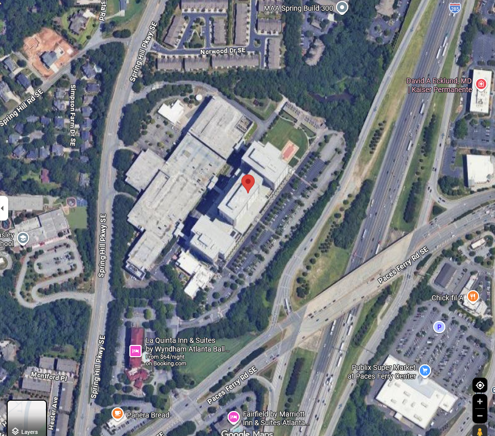

This lab was footprinting: gathering public information on a target without touching it directly. I picked Home Depot and worked through nslookup, WHOIS lookups, Google searches and dorks, their SEC filing, and their robots.txt file to see how much you can learn about a company before ever scanning anything.
1. Perform an nslookup of homedepot.com and record the IP addresses returned.
homedepot.com resolves to 35.201.95.83
www.homedepot.com resolves to 23.217.78.138
2. Do a WHOIS lookup for homedepot.com by the IP addresses returned in the previous question.
A WHOIS lookup of 35.201.95.83 returns Google LLC. The IP falls in the GOOGLE-CLOUD range (35.192.0.0/12, NetHandle NET-35-192-0-0-1).
Org address: 1600 Amphitheatre Parkway, Mountain View, CA 94043.
The IP belongs to Google Cloud, not Home Depot directly.
3. Perform the same operations as in question 2 using domaintools.com.
Domain WHOIS via domaintools.com for homedepot.com returns:
Registrar: CSC Corporate Domains, Inc.
Registered: August 4, 1992
Expires: August 3, 2026
Registrant Org: Homer TLC, Inc.
Registrant Address: 2455 Paces Ferry Road NW, Atlanta, GA 30339, US
Phone: +1.7704338211
Name Servers: a1-27.akam.net, a3-64.akam.net, a6-65.akam.net, a7-66.akam.net, a16-66.akam.net, a18-67.akam.net
Status: clientTransferProhibited, serverDeleteProhibited, serverTransferProhibited, serverUpdateProhibited
4. Compare the returned results from questions 2 and 3 and record the differences you find, if any.
Q2 (IP WHOIS) returns Google LLC because the IP is hosted on Google Cloud.
Q3 (domain WHOIS) returns Homer TLC, Inc., a Home Depot subsidiary that holds the domain.
The two queries hit different registries (ARIN for IPs, Verisign/CSC for domains) and return different information.
Q3 also shows registrar-level transfer, delete, and update locks that do not appear in Q2.
5. Perform a Google search of the URL homedepot.com. Record the first five links.
1. https://www.homedepot.com/ (main retail site)
2. https://www.homedepot.com/c/myaccount (My Account portal)
3. https://corporate.homedepot.com/ (corporate site)
4. https://www.homedepot.com/l/ (store finder)
5. https://careers.homedepot.com/ (careers portal)
6. Perform the following Google search: filetype:pdf pdf site:homedepot.com
Sample results returned:
Product catalog PDFs at homedepot.com/catalog/pdfImages/
Appliance repair manuals at appliancerepair.homedepot.com/assets/manuals/
SEC 10-K filings at ir.homedepot.com
The search also surfaces the appliancerepair subdomain, which does not appear in normal search results.
7. Perform a Google search using one of the directives covered in the chapter.
Query used: intitle:"index of" site:homedepot.com
No exposed directory listings were returned, so Home Depot has directory browsing disabled on their web servers.
8. Find the company's latest 10-K filing. Record their corporate phone number and address here.
Corporate Address: 2455 Paces Ferry Road, Atlanta, Georgia 30339
Corporate Phone: (770) 433-8211
Source: Home Depot Q4 2024 10-K filed with the SEC.
9. Go to Google Maps and use the corporate address to find and capture a map of the location here.
Address: 2455 Paces Ferry Road, Atlanta, GA 30339

10. Find the executive team. Record the names of the insider roster here.
Source: corporate.homedepot.com/page/home-depot-leadership-0
Ted Decker, Chair, President & Chief Executive Officer
Ann-Marie Campbell, Senior Executive Vice President
Billy Bastek, EVP, Merchandising
Jordan Broggi, EVP, Customer Experience and President, Online
Angie Brown, EVP & Chief Information Officer
John Deaton, EVP, Supply Chain & Product Development
Richard McPhail, EVP & Chief Financial Officer
Teresa Wynn Roseborough, EVP, General Counsel & Corporate Secretary
Michael Rowe, EVP, Pro
Stephanie Smith, EVP, Human Resources
Molly Battin, SVP & Chief Marketing Officer
Deepak Arora, SVP, Technology
11. Look up one of the people from the executive team. Record a previous place of employment and the URL you got the information from here.
Executive: Ted Decker (Chair, President & CEO)
Previous employer: Kimberly-Clark Corporation, in business development, strategic planning, and finance positions. He also worked at Scott Paper Co. and earlier at PNC Bank.
URL: https://corporate.homedepot.com/bio/ted-decker-chair-president-chief-executive-officer
12. Retrieve the robots.txt file from homedepot.com and record it here.
URL: https://www.homedepot.com/robots.txt
# robots.txt for https://www.homedepot.com/
User-agent: *
Disallow: /*SiteMapView*
Disallow: /*Navigation?Ns=P_Topseller_Sort|style=List*
Disallow: /*Navigation?Ns=P_Topseller_Sort|style=A*
Disallow: /*CheckoutSignIn*
Disallow: /*OrderItemUpdate*
Disallow: /*THDLogon*
Disallow: /*ShippingMethod*
Disallow: /*OrderItemDisplayViewShiptoAssoc*
Disallow: /*DeliveryCalendar*
Disallow: /*OrderItemAdd*
Disallow: /*MoreViewsPage*
Disallow: /*Search?*
Disallow: /*NCNI-5*
Disallow: /*recordCompareList*
Disallow: /*PLP_Overlay*
Disallow: /*Ntt-*
Disallow: /*Ntk-*
Disallow: /*AjaxNavigation*
Disallow: /*Fragments/
Disallow: /s/
Disallow: /p/qv/
Disallow: /*OnlineAccount*
Disallow: /*mycart*
Disallow: /*mycheckout*
Disallow: /*usebeta*
Disallow: /canvas/
Disallow: /pep/
Disallow: /auth/view/signin?redirect=*
Disallow: /auth/view/createaccount?redirect=*
Disallow: /clickstream-producer/v1/publish
Disallow: /l/search/*
Disallow: /l/detail/*
Disallow: /b/Featured-Products*
Disallow: /compare?*
Disallow: /schedule-a-measure/
Disallow: /services/*/reviews/page/*
Allow: /services/*/reviews/page/1$
Disallow: /e/
Disallow: /custom-blinds/Configurator*
Disallow: /cart$
Disallow: /cart/
Disallow: /cart*
Disallow: /checkout*
Disallow: /order-confirmation*
Disallow: /customer/account/v1/citi/renderFormParameters
Allow: /s/*?CI-5
Sitemap: https://www.homedepot.com/sitemap/main.xml